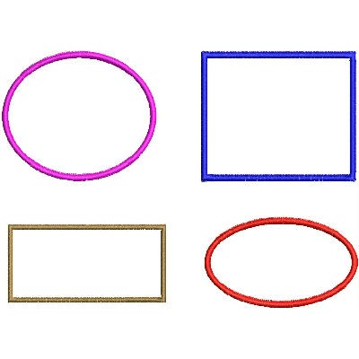

                                   <!-- -----------------------------------------------------------
+ Description : Image map 
+ Author      : Webstack Academy (P) Ltd 
+ Date        : 21-oct-2016
+----------------------------------------------------------- -->

<!DOCTYPE html>
<html>
<body>
<p>Click on the sun or on one of the planets to watch it closer:</p>



<!-- circle = (x, y, radius)
	rectangle = (x1, y1, x2, y2) 
	polygon = (x1, y1, x2, y2, x3, y3, x4, y4, x5, y5)

    shape = "default | rect | circle | poly"
-->
<map name="shape">
  <area shape="circle" coords="31, 31, 30" alt="Roses" href="./images/roses_flowers.jpg">
  <area shape="rect" coords="4, 80, 64, 110" alt="Sunflower" href="./images/sun_flower.jpg">
 
</map>
</body>
</html>

